1. Что такое Орден Стражей Узора
Орден Стражей Узора — надгосударственное братство, которое обнаруживает, изучает и стабилизирует временные аномалии. Его члены не правят землями и не собирают силу с населения. Они входят в опасную область, закрепляют край разрыва и извлекают избыток энергии до тех пор, пока повреждённый участок Узора не сомкнётся.
Иерархия Стражей — это одновременно организация и сверхъестественная связь. Организация даёт обучение, снаряжение и право действовать от имени Ордена. Связь возникает после Клятвы Узла и открывает доступ к Сфере Узора, личному тер'ангриалу и ранговым способностям. Персонаж может покинуть организацию, но разорвать саму связь способен только особый ритуал Архистражей.
2. Происхождение и Реформа Узла
После Последней Битвы Колесо продолжило вращаться, но Узор не сразу обрёл прежнюю цельность. В первые десятилетия Четвёртой Эпохи стали появляться локальные разрывы: участки, где время, материя и расстояние переставали подчиняться общим законам. Через них проникали искажённые вещества, чуждая энергия и существа, иногда связанные с Тел'аран'риодом, а иногда не похожие ни на что известное.
Айз Седай и Аша'маны могли подавить отдельный выброс, однако обычный круг направляющих плохо подходил для многочасового удержания нестабильного края. Требовались точное дозирование, постоянный контроль и единый резерв, который не зависел бы от силы одного человека. Из полевых союзов направляющих, сновидцев, исследователей и воинов постепенно возник Орден.
Первый век его истории был жесток. Раннее «коллективное усиление» истощало участников, повреждало способность касаться Источника и иногда убивало тех, кто стоял в нижних звеньях цепи. После нескольких катастроф Архистражи провели Реформу Узла: запретили принудительную передачу энергии, отделили мирное население от внутренней сети и перенесли общий резерв в укреплённый узел Тел'аран'риода.
Современный Орден придерживается трёх запретов: никаких жертвоприношений, никакого намеренного выжигания способности направлять и никакого использования мирных жителей как источника энергии. Нарушение любого из них считается изменой Клятве Узла.
3. Цели, принципы и девизы
- Обнаружение. Найти аномалию, определить её границы, рейтинг и характер угрозы.
- Локализация. Вывести жителей, перекрыть опасную область и не дать существам или эффектам распространиться.
- Стабилизация. Закрепить узловую точку, извлечь избыток энергии и позволить краям разрыва сомкнуться.
- Накопление резерва. Сохранять безопасно извлечённую энергию для будущих операций, в том числе для стабилизации редких постоянных аномальных очагов.
- Наблюдение. Вести реестр проявлений, чтобы следующие отряды знали, чего ожидать.
4. Подтверждённые термины
| Термин | Значение |
|---|---|
| Аномалия | Локальное нарушение Узора с самостоятельными эффектами. Аномалия может быть временной или постоянной. |
| Рейтинг аномалии (R) | Кампанийная величина от 1 и выше, которую назначает Мастер. В формулах обозначается R; она задаёт СЛ и мощность выбросов, но не является ПО существа. |
| Узловая точка | Локальная точка устойчивой привязки, через которую Пирамидка формирует канал извлечения энергии аномалии. Подходящая точка определяется Пирамидкой автоматически при активации. |
| Клятва Узла | Добровольная клятва на тер'ангриале-активаторе. Она связывает Стража со Сферой Узора и создаёт его знак. |
| Пирамидка Узора | Личный тер'ангриал размером с ладонь. Он закрепляет узловую точку, извлекает энергию и служит защищённым сосудом. |
| Сфера Узора | Главный тер'ангриал Ордена и центральный резерв, находящийся в Цитадели. |
| Ключевая характеристика | Интеллект, Мудрость или Харизма, выбранная при получении I ранга. Выбор постоянен и применяется там, где правило требует спасбросок Иерархии. |
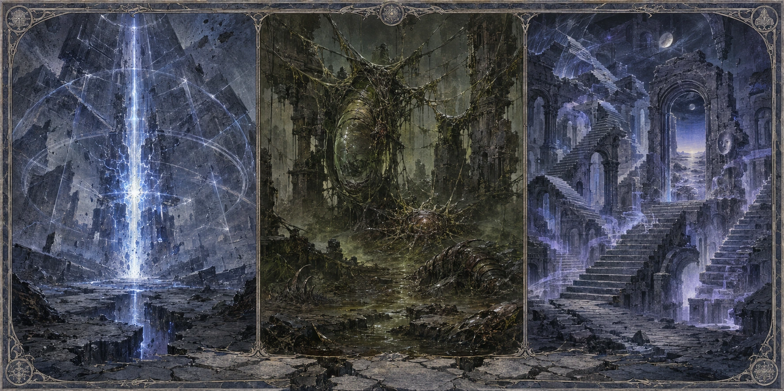
5. Устройство Ордена
Орден не является государством и не считает государственную границу достаточным основанием оставить аномалию без внимания. На практике Стражи стараются получить согласие местной власти, но при непосредственной угрозе жителям начинают эвакуацию и локализацию без ожидания разрешения.
Основная полевая единица — узловой отряд. В него входят оператор Пирамидки, защитники, наблюдатель и, если возможно, направляющий или специалист по Тел'аран'риоду. Титул ранга обозначает пропускную способность связи и меру ответственности, а не безусловное командование. В поле решения принимает назначенный руководитель операции; им не всегда является участник высшего ранга.
- Мирные жители не приносят Клятву Узла и не участвуют в передаче энергии.
- Членство добровольно. После клятвы оно считается пожизненным долгом, но удерживать человека силой запрещено.
- Страж может отказаться от задания. Архистраж вправе ограничить его доступ к резерву, если связь повреждена или участник нарушил протокол.
- Повышение ранга проводится только после испытания и не зависит от классового уровня персонажа.
6. Цитадель и Сфера Узора
Цитадель Узора закреплена в Тел'аран'риоде и не совпадает с обычным отражением какого-либо города. Это искусственно удерживаемый узел: его стены сохраняют форму даже тогда, когда Мир Снов пытается измениться вслед за волей посетителя. Цитадель служит штабом, архивом, лазаретом и защитной оболочкой центрального резерва.
В центре нижнего зала находится Сфера Узора — матовый шар около двух метров в поперечнике. Он парит на ладонь над полом и покрыт печатями двух пересекающихся кругов. Сфера принимает только энергию, прошедшую через исправный тер'ангриал Ордена; прямое направление Единой Силы в неё не пополняет резерв.
6.1. Общие правила доступа
| Кто | Условия доступа |
|---|---|
| Страж I–II ранга | Входит только вместе с носителем Ключа III ранга или выше. Должен оставаться в пределах 5 фт от проводника все 10 минут перехода. |
| Страж III ранга и выше | Открывает вход из любой точки физического мира и может провести одно согласное существо. Выход возможен только через один из пяти якорей. |
| Не член Ордена | Может войти только как одно согласное существо, сопровождаемое носителем Ключа III ранга или выше. |
| Враг или несогласное существо | Ключ его не переносит. Насильственный проход требует отдельного сюжетного средства и не является функцией ранговой способности. |
6.2. Облик и ощущения
Цитадель не похожа на построенную крепость. Её серый камень словно содержит свет: вблизи внутри плит проступают тонкие нити, похожие на жилы, и снова исчезают. Башни уходят вверх слишком высоко, и кажется, будто их удерживает не фундамент, а само правило, закрепившее Цитадель в Мире Снов. Углы немного смещены, лестницы при повторном взгляде меняют длину, окна появляются и исчезают, однако общая форма остаётся целостной и устойчивой.
Внутри царит не отсутствие звуков, а строгая тишина, в которой каждый звук остаётся на своём месте. В груди ощущается давление структуры, воздух пахнет мокрым камнем и озоном. За внешней границей Мир Снов дрожит и меняется, но внутри страхи не обретают форму, а воля посетителя не переписывает пространство.
6.3. Пространства Цитадели
| Пространство | Назначение и свойства |
|---|---|
| Порог Узла | Стабильный внешний двор для новых гостей. Попытки изменить его силой сна мягко гаснут. Здесь прибывших встречают и проверяют их допуск. |
| Галерея Нитей | Архив резонанса: полупрозрачные пластины хранят сцены операций, лица и отпечатки разрывов. Долгое наблюдение иногда вызывает видение, содержание которого определяет Мастер. |
| Мастерские Пирамид | Залы проверки и ремонта тер'ангреалов. Ткачи выравнивают печати, фиксируют трещины и изучают изменения, принесённые из аномалий. |
| Зал Допусков | Административный центр потоков энергии Сферы. Здесь устанавливают лимиты, открывают маршруты и следят, чтобы общий резерв не стал инструментом личной власти. |
| Зал Сферы Узора | Сердце Цитадели. Здесь принимают заполненные Пирамидки, распределяют резерв и проводят повышение либо окончательное снятие связи с Иерархией. |
| Сады Тишины | Изумрудный сад огира-садовника. По слухам, так выглядели деревья места, откуда он пришёл; иногда среди них видят тень волка. |
| Зал Перемещения | Изолированное помещение, из которого открываются выходы к пяти физическим якорям. Других предусмотренных Ключом выходов нет. |
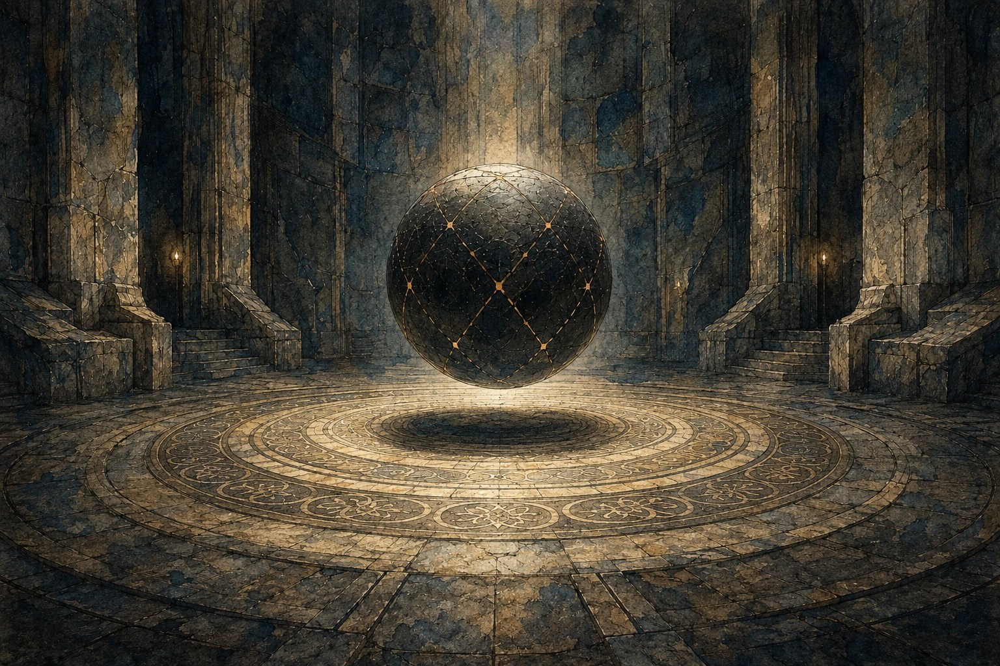
Сфера имеет около двух метров в диаметре и парит примерно в двадцати сантиметрах над полом. В её поверхности расположены треугольные углубления шириной с ладонь, куда входят заполненные Пирамидки. Сама Сфера не сияет: мягкий красноватый свет проходит только по краям углублений и кольцам печатей на полу. При приближении Архистража пространство становится плотнее не от силы, а от признанного права доступа.
6.4. Защита Цитадели
- Маршрут подчиняется допуску. Закрытая дверь становится стеной, лестница удлиняется, а коридор возвращает нарушителя к исходной точке.
- Влияние воли на Мир Снов подавлено. Обычное изменение тела, предметов или пространства волей внутри Цитадели невозможно, если отдельное правило прямо не разрешает обратное.
- Насилие встречает сопротивление. Попытка повредить печать вызывает острую боль в висках и дезориентацию; конкретный игровой эффект назначает Мастер по масштабу вмешательства.
- Ложь становится трудной. Чем дольше гость сознательно обманывает внутри служебных залов, тем тяжелее ему говорить. Это предупреждение, а не безошибочное средство определения истины.
6.5. Ключ Цитадели и переход
Ключ Цитадели открывается на III ранге. Носитель сосредотачивается на знаке Ордена и проводит 10 минут в непрерывной медитации, оставаясь неподвижным. Получение урона, добровольное перемещение, потеря сознания или дееспособности либо прекращение медитации прерывают процедуру без проверки Концентрации. Попытку можно начать заново без расхода ресурса.
Вход можно открыть из любой точки физического мира. В момент завершения тело, одежда и переносимое снаряжение полностью перемещаются в Порог Узла; физическое тело не остаётся снаружи. Одно согласное существо может пройти вместе с носителем, если остаётся в пределах 5 фт все 10 минут.
Найти Цитадель обычным путешествием по Тел'аран'риоду нельзя: она закреплена в скрытой точке привязки. Для выхода носитель выбирает якорь в Зале Перемещения и повторяет ту же десятиминутную процедуру. Если выбранный якорь временно разрушен, запечатан или занят опасным эффектом, Цитадель не открывает путь и позволяет выбрать другой.
6.6. Пять физических якорей
| Якорь | Место и особенности |
|---|---|
| Последний Приют, Шиенар | Заброшенная смотровая вышка в двух милях к северо-востоку от форта. Знак вырезан в каменном полу; ближайшее поселение находится примерно в сорока минутах верхом. |
| Сиренар, Арафель | Третья кладовая слева на подвальном уровне городского архива. Ключ хранит архивариус Сола Веррен, знающая лишь о визитах «особых гостей». |
| Фал Моран | Запертая комната на складе фиктивного торгового дома «Восход» в портовом квартале. Управляющий получает ежегодную плату за молчание и обслуживание помещения. |
| Тар Валон | Небольшой флигель при доме Гильдии Хранителей. Вход скрыт в стене публичного сада на берегу реки; место формально считается нейтральной территорией. |
| Иллиан | Угловая комната рыбацкого дома у старого рынка. Владелец получает пенсию Ордена и защиту от лишних расспросов городской стражи. |
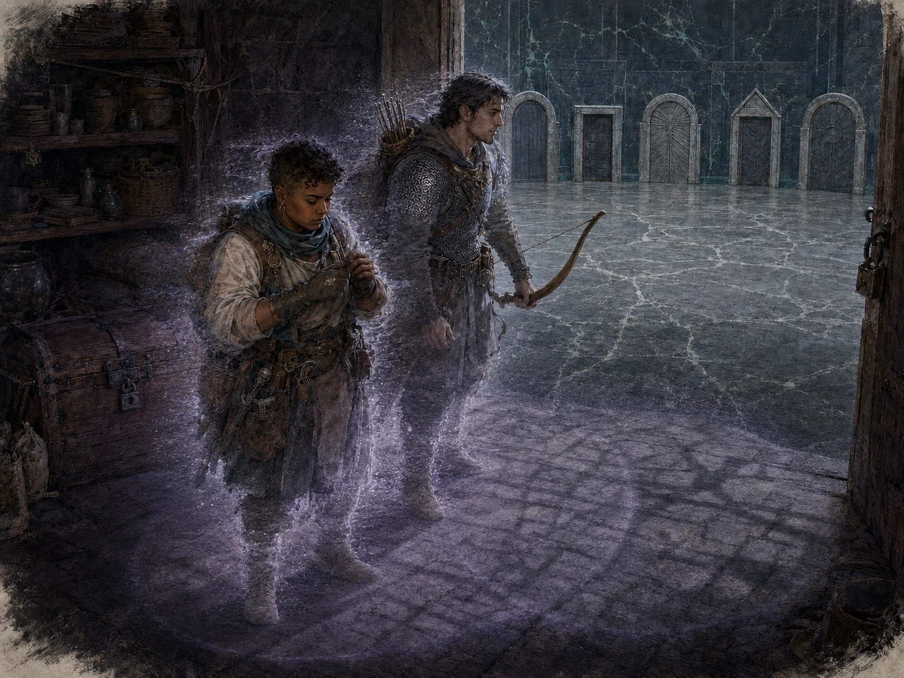
7. Энергия и экономика Ордена
7.1. Энергетические источники
Орден использует два источника: добровольную поддерживающую долю собственных членов и избыток, безопасно извлечённый из аномалий. Это два разных потока энергии.
- Поддерживающая доля. Клятва пропускает малую, дозированную часть энергии Стража. Она поддерживает знак, доступ и связь со Сферой, но не отнимает хиты, ячейки плетений или классовые ресурсы.
- Извлечённая энергия. Пирамидка забирает хаотический избыток аномалии. После успешного схлопывания заряд запечатывается внутри неё и передаётся Сфере в Цитадели.
Ни один Страж не хранит долю общего резерва постоянно. Когда способность говорит о «выдаче из резерва», Сфера открывает краткий дозированный поток энергии через знак персонажа.
7.2. Деньги не равны энергии
Запрет брать энергию у мирных жителей не означает, что Орден существует без материального снабжения. Отрядам нужны продовольствие, металл, лошади, ткань, лекарства, помещения и оплата связных. Поэтому Орден принимает деньги и имущество за труд, сведения и безопасную обработку материалов, но никогда не продаёт энергию Сферы или доступ к ней.
7.3. Экономические запреты
- Никаких энергетических обязательств гражданских. Плата, пожертвование или договор протектората не создают Клятву Узла и не дают Ордену права брать жизненную либо Единую Силу.
- Никакой аренды Сферы. Орден не продаёт усиления, ранговые допуски, доступ к резерву или право направить его в частной войне.
- Никакого шантажа аномалией. Стражи не угрожают уйти из уже начатой спасательной операции ради повышения цены и не требуют плату за непосредственное спасение детей или иных беспомощных людей.
- Орден обычно отказывается от договоров, которые мешают ему оказывать неотложную помощь другим сторонам при непосредственной угрозе аномалии.
7.4. Семь каналов снабжения
| Канал | Что получает заказчик | Что получает Орден |
|---|---|---|
| Операционный контракт | Разведку, классификацию, периметр, эвакуацию, стабилизацию и последующий контроль. | Фиксированную ставку за цикл и заранее согласованный бонус за сохранённые жизни или инфраструктуру. |
| Коридор безопасности | Окно прохода, сопровождение отрядом I–III ранга и сведения из обновляемой Карты шрамов. | Оплату за патрули, сигнальные башни, картографию и поддержание маршрута. |
| Побочные материалы | Сертифицированные кристаллы, пыль, металлы и иные продукты с указанным происхождением, риском и условиями хранения. | Выручку и контроль над опасным товаром, который иначе ушёл бы на чёрный рынок. |
| Лицензия и аудит | Право охоты, проверку подготовки, карантин и маркировку трофеев. | Пошлину за аудит и вывоз, а также сведения о новых проявлениях. |
| Обучение | Курсы по периметру, эвакуации, типам поражений и стандартным знакам предупреждения. | Плату за инструкторов без раскрытия секретов Сферы и Архистражей. |
| Пожертвование и протекторат | Долгосрочное присутствие фонда узла и устойчивую связь с Орденом без гарантии исключительности. | Добровольные деньги, продовольствие, лекарства, инструменты или регулярное снабжение. |
| Доля экспедиции | Участники сохраняют безопасную часть законно добытых трофеев. | Долю на содержание Ордена и право изъять опасные предметы до завершения аудита. |
Оплата может быть денежной или натуральной. Доля безопасной выручки от экспедиционных трофеев, поступающая полевой группе и Ордену, определяется условиями конкретной экспедиции или внутренним регламентом. Материалы, не прошедшие аудит, не считаются добычей и остаются в карантине независимо от того, кто их нашёл.
7.5. Контракт и неотложная помощь
Плановый контракт заключают до операции и описывают как управление риском, а не как обещание «победить аномалию». В нём фиксируют объём разведки, границы периметра, условия эвакуации, допустимый ущерб, порядок последующего наблюдения и контроля и форму оплаты. Бонус за результат возможен только сверх базовой ставки и не отменяет обязанность соблюдать протокол.
При непосредственной угрозе жизни Стражи сначала эвакуируют и стабилизируют, а вопрос оплаты решают после устранения опасности. Отказ поселения или отдельного человека платить не является основанием прекратить уже начатую эвакуацию или стабилизацию, снять установленный периметр или оставить беспомощных внутри. Орден вправе прекратить будущие плановые услуги неплательщику, но обязан передать ему сведения о непосредственной угрозе.
7.6. Сертификация и чёрный рынок
Побочный продукт получает запись о месте, дате и рейтинге аномалии, результатах очистки, безопасных способах перевозки и запретах применения. Сертификат не объявляет предмет безвредным: он показывает известный риск и подтверждает непрерывную цепочку хранения. Подделка маркировки, скрытый вывоз или продажа заражённого материала в жилой квартал считаются тяжёлыми нарушениями и дают основание для конфискации.
Главные противники этой системы — чёрный рынок артефактов, частные силы, пытающиеся превратить аномалию в оружие, и государства, стремящиеся монополизировать услуги Ордена. Основные законные заказчики — порубежные крепости, торговые дома, караванные союзы, общины, монастыри и власти территорий, где разрывы угрожают дорогам и городам.
7.7. Типичные экономические конфликты
- Поддельный сертификат. Проданная как безопасная партия вызывает вспышку в городе; необходимо установить, была ли это ошибка, подмена или саботаж.
- Пропавший караван. Торговый дом отказался оплачивать коридор, после чего экспедиция исчезла, а Орден обвиняют в намеренном бездействии.
- Попытка купить исключительность. Государство или Иерархия предлагает огромный контракт в обмен на отказ помогать соседям.
- Скрытый трофей. Охотники утаивают легендарный предмет, и Стражам приходится остановить его вывоз до того, как станет понятна его опасность.
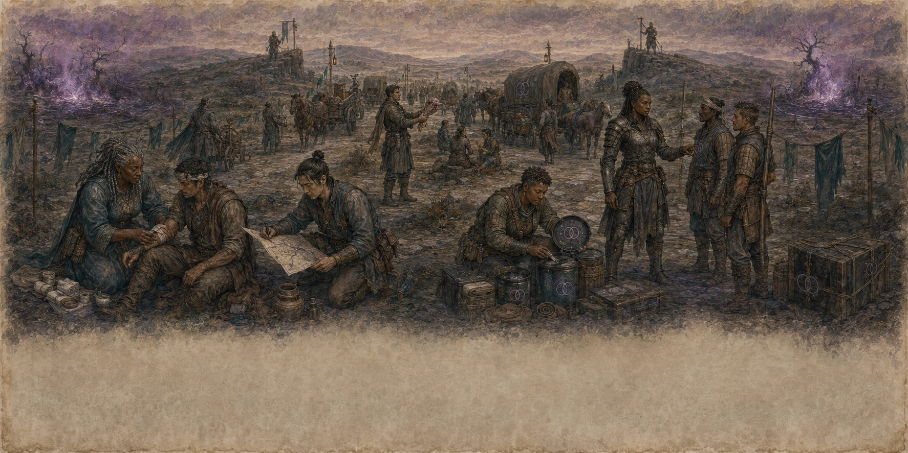
8. Клятва, знак и личный тер'ангриал
Клятву приносят перед шарообразным тер'ангриалом-активатором, на котором вырезаны две пересекающиеся окружности. Кандидат называет своё имя, признаёт три запрета Реформы Узла и выбирает ключевую характеристику: Интеллект, Мудрость или Харизму. После завершения клятвы выбор нельзя изменить обычным отдыхом, повышением уровня или сменой класса.
Знак Ордена проявляется на коже или на выбранной части одежды. Обычно он тусклый и заметен только вблизи аномалии либо при использовании ранговой способности. Страж может скрыть или проявить знак бонусным действием. Скрытый знак не разрывает связь и не мешает способностям.
Каждому посвящённому соответствует одна Пирамидка Узора. В покое она хранится в защищённой ячейке Цитадели, а Страж вызывает её через знак. Передать право управления чужой Пирамидкой нельзя. Пустую неактивную Пирамидку можно поднять и переносить как обычный предмет, однако владелец может бонусным действием отозвать её независимо от того, кто её держит. Активную или заполненную Пирамидку отозвать нельзя.
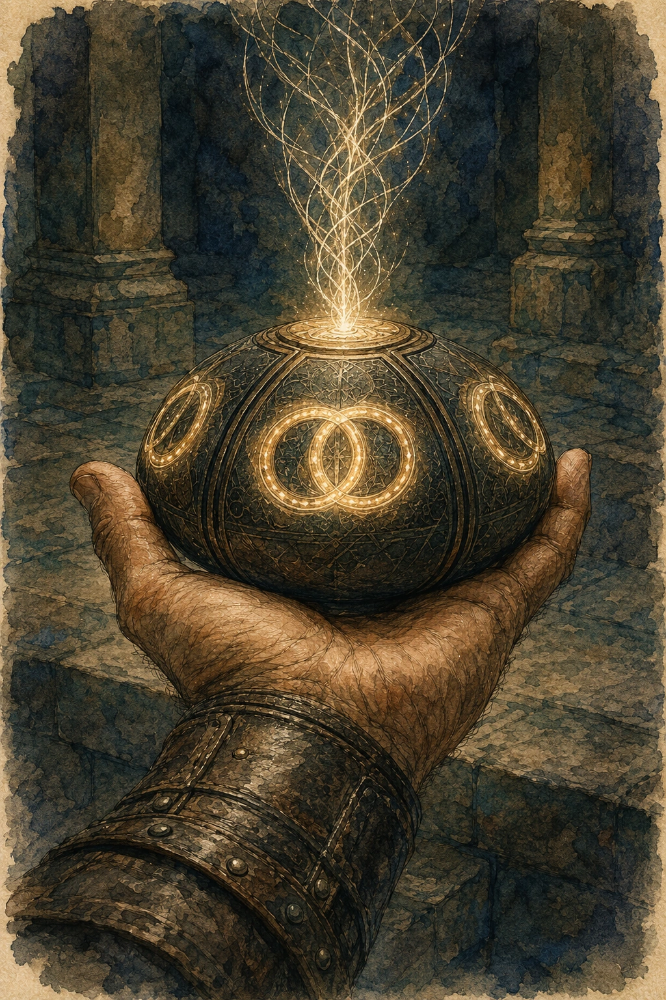
9. Пирамидка Узора
Это матовая пирамида размером с ладонь. На каждой грани выжжена печать двух пересекающихся кругов. Рядом с аномалией линии кажутся глубже, чем позволяет толщина материала, а предмет ощущается тяжелее своего размера. Тер'ангриал не закрывает разрыв ударом силы: он действует как якорь и насос, фиксируя край и переводя хаотический выброс в управляемый заряд.
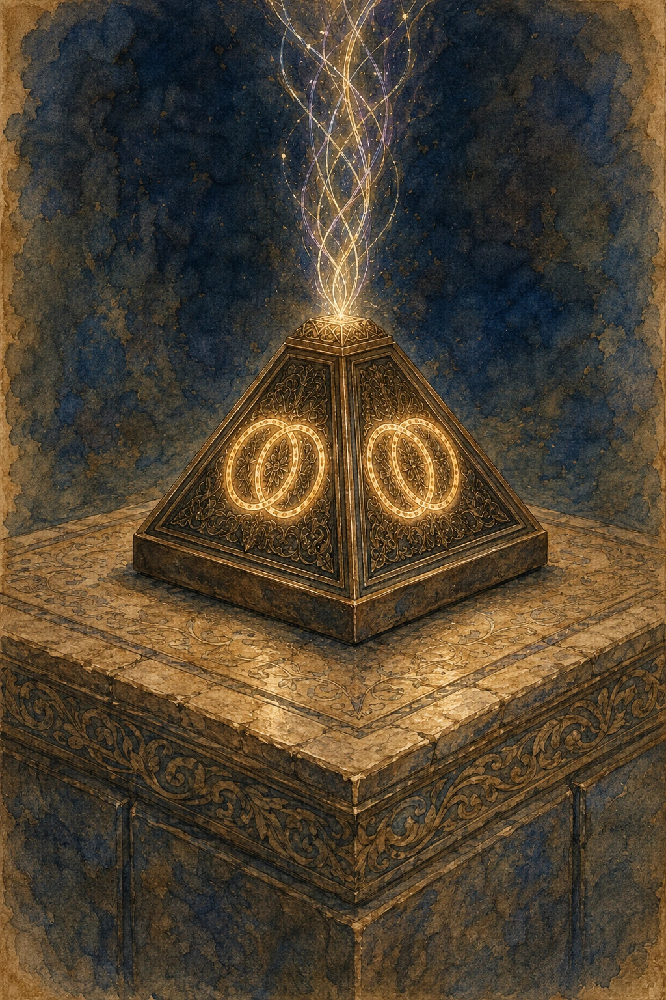
| Ранг | Начало операции извлечения |
|---|---|
| I–II | Действие: Пирамидка появляется, активируется и устанавливается в узловой точке как часть того же действия. |
| III–VI | Бонусное действие: Пирамидка появляется, активируется и устанавливается в узловой точке как часть того же бонусного действия. |
Вне операции пустую неактивную Пирамидку можно вызвать с той же стоимостью действия, которая указана для текущего ранга. Отозвать её можно бонусным действием независимо от того, кто её держит. Активную или заполненную Пирамидку отозвать нельзя: после завершения операции заполненный тер'ангриал необходимо физически доставить в Цитадель.
10. Узловая точка и привязка
Узловая точка — локальная точка устойчивой связи аномалии с окружающим Узором. Она не обязана совпадать с геометрическим центром, Ядром или самым заметным проявлением разрыва.
Подходящую узловую точку Пирамидка определяет автоматически как часть активации. Отдельная проверка Расследования, Восприятия или иного навыка для использования базовой способности Иерархии не требуется. Наблюдение и исследование среды могут давать дополнительные сведения об аномалии по решению Мастера, но не являются обязательным условием установки Пирамидки.
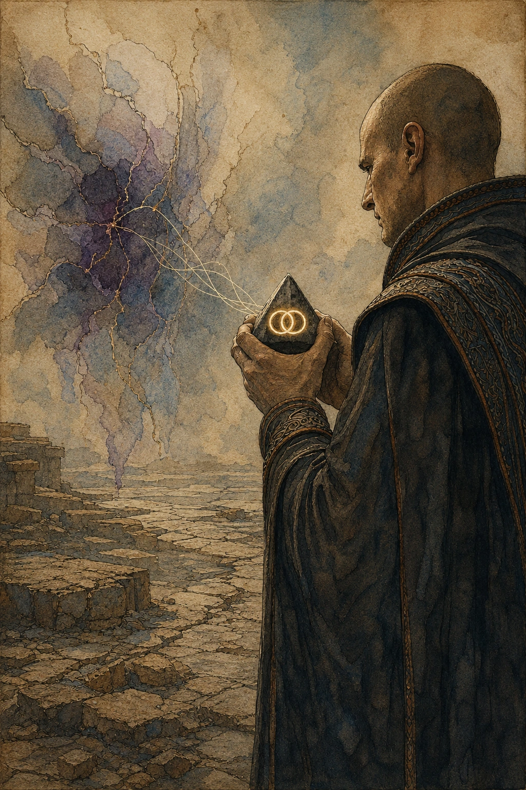
11. Ритуал извлечения
- Установите Пирамидку. Оператор должен находиться не дальше 5 фт от узловой точки. Призыв, активация и установка выполняются одной операцией согласно рангу; отдельное взаимодействие с предметом не требуется.
- Удерживайте канал. После установки руки свободны. Оператор должен непрерывно оставаться в сознании, на том же плане и не дальше 60 фт от Пирамидки. Он может двигаться, сражаться и направлять Единую Силу; Концентрация не требуется.
- Отсчитайте время. Длительность извлечения равна 1к10 + R − ранг Иерарха, минимум 1 раунд, где R — рейтинг аномалии. Первый раунд начинается сразу после активации; в конце каждого хода оператора оставшееся время уменьшается на 1.
- Закройте узел. Когда счётчик достигает 0, оператор совершает спасбросок ключевой характеристики против СЛ 10 + R. Это спасбросок характеристики: бонус мастерства добавляется только в том случае, если персонаж владеет спасбросками выбранной характеристики. Пирамидку брать в руки не требуется.
- Заберите заряд. При успехе аномалия схлопывается, а Пирамидка становится заполненной. Чтобы передать заряд, Страж должен физически доставить её к Сфере Узора и потратить 1 минуту на синхронизацию.
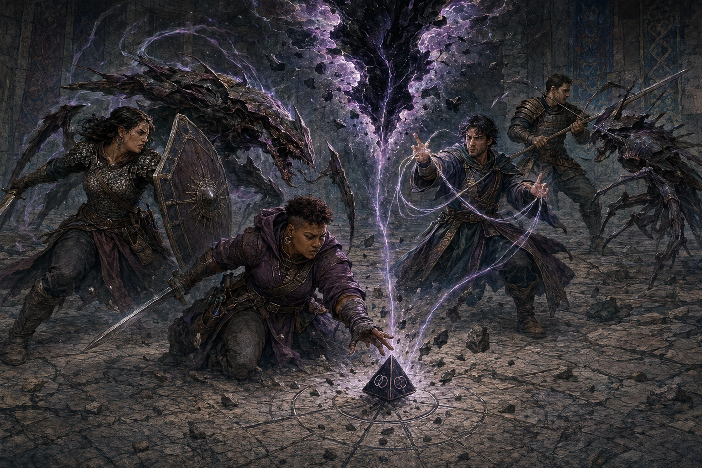
12. Провал финального спасброска
При провале бросьте к100. Все последствия являются частью того же ритуала и не требуют дополнительного действия.
| к100 | Последствие |
|---|---|
| 01–10 | Срыв канала. Пирамидка теряет накопленное, аномалия сохраняется. Повторная активация возможна после короткого отдыха оператора. |
| 11–25 | Отметка Узора. Оператор получает помеху на следующий спасбросок Иерархии до окончания короткого отдыха. Извлечение продолжается ещё 1к4 раунда, затем финальный спасбросок повторяется. |
| 26–100 | Судорога разрыва. Происходит немедленный выброс существа или эффекта. Извлечение продолжается ещё 1к4 раунда, затем финальный спасбросок повторяется. |
Число повторных проверок не ограничено, пока оператор удерживает канал и Пирамидка остаётся на месте. Несколько Отметок Узора не складываются: помеха по-прежнему действует только на один следующий спасбросок Иерархии.
Выброс аномалии — немедленное внеочередное срабатывание проявления по её паспорту. Малый выброс означает одно локальное проявление или появление одного подходящего существа; сильный выброс — значимое проявление либо появление существа или группы существ, соответствующих рейтингу и сцене аномалии. Сам термин «выброс» не создаёт отдельного универсального типа урона.
13. Состояния, фиксация и разрушение Пирамидки
После активации Пирамидка фиксируется относительно узловой точки и остаётся неподвижной до завершения или срыва извлечения. Её нельзя поднять, сдвинуть, оттолкнуть, перетащить или опрокинуть. Попытки изменить её положение не вызывают отдельной проверки или дополнительного эффекта: положение активной Пирамидки не меняется.
| Состояние | Перенос и отзыв | Последствие уничтожения |
|---|---|---|
| Пустая, неактивная | Можно переносить. Владелец может отозвать бонусным действием независимо от того, кто её держит. | Исчезает без взрыва. Новый экземпляр получают только в Мастерских Пирамид после возвращения в Цитадель. |
| Активная, идёт извлечение | Неподвижна и не может быть отозвана. | Канал немедленно срывается, промежуточный заряд теряется, аномалия совершает сильный выброс. Взрыва 60 × R нет. |
| Заполненная | Можно физически переносить; отозвать нельзя. | Взрыв по правилам ниже; заряд теряется. Новый экземпляр получают только в Мастерских Пирамид. |
До успешного финального спасброска Пирамидка не считается заполненной, даже если извлечение продолжается уже несколько раундов.
| Параметр объекта | Значение |
|---|---|
| КД | 18 |
| Хиты | 50 + 10 × ранг владельца |
| Сопротивления | Дробящий, колющий и рубящий урон от немагических атак; урон от плетений Единой или Истинной Силы и от аномальных эффектов. |
| Иммунитеты | Яд и психический урон. |
Если уничтожена заполненная Пирамидка, происходит взрыв радиусом 60 фт. Все существа в области совершают спасбросок Ловкости против СЛ 10 + R последней извлечённой аномалии. При провале существо получает 60 × R силового урона, при успехе — половину. Заряд теряется.
Уничтоженная Пирамидка не восстанавливается после отдыха. Владелец может получить новый экземпляр только после возвращения в Цитадель и восстановления связи в Мастерских Пирамид.
14. Общие правила рангов
Иерархия дополняет класс и уровень персонажа D&D 5e. Ранг получают после сюжетного испытания и ритуала у Сферы Узора; он не повышается автоматически вместе с уровнем класса. Именные способности нижестоящих рангов сохраняются. В таблице ниже постоянные числовые параметры показаны как итог текущего ранга, а колонка повышения характеристик показывает новую прибавку, получаемую при переходе на эту ступень.
На II ранге и при каждом дальнейшем повышении увеличьте на +1 две характеристики по выбору. Выбор можно делать заново на каждой ступени, а повышения складываются. Предел характеристик остаётся обычным на I–III рангах, повышается до 22 на IV–V и до 24 на VI ранге.
| Ранг | Титул | При повышении | КД | Атаки и урон оружием | Макс. хиты | Скорость | Иниц. | Спасброски |
|---|---|---|---|---|---|---|---|---|
| I | Страж-послушник | — | — | — | — | Базовая | −1 | — |
| II | Страж Узла | +1 к двум характеристикам | — | +1 | — | +5 фт | +1 | +1 ко всем |
| III | Ткач Потока | +1 к двум характеристикам | +1 | +1 | — | +5 фт | +2 | +2 ко всем |
| IV | Старший Ткач | +1 к двум характеристикам | +1 | +2 | +20 | +5 фт | +3 | +3 ко всем |
| V | Чемпион Узора | +1 к двум характеристикам | +2 | +2 | +40 | +10 фт | +4 | +4 ко всем |
| VI | Архистраж | +1 к двум характеристикам | +2 | +3 | +60 | +10 фт | +5 | +5 ко всем |
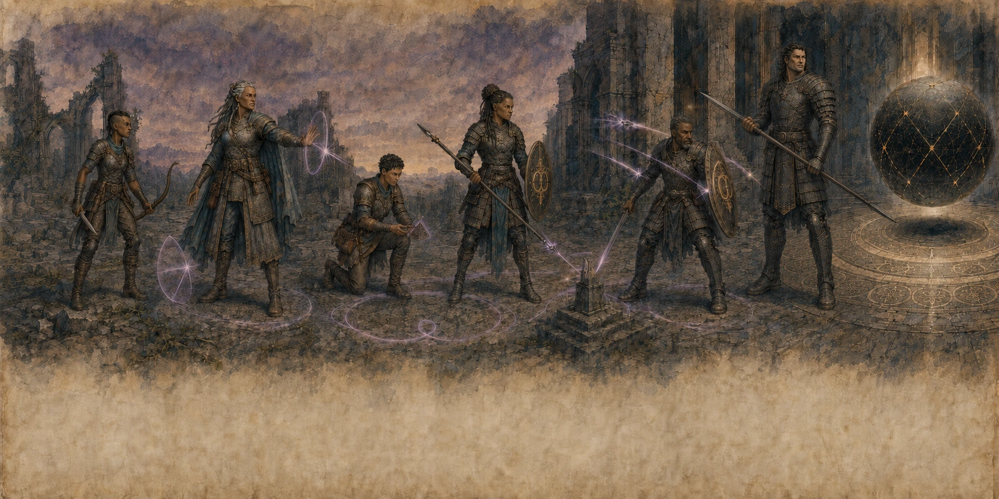
15. Направляющие и Иерархия
Если свободный член Ордена уже способен направлять Единую Силу, к нему применяется профиль усиления направляющего текущего ранга. Иерархия не создаёт способность направлять, не открывает неизвестные плетения, не повышает собственный Уровень Силы (Power Level) персонажа и не создаёт обычные ячейки плетений.
| Ранг | Бонус к СЛ | Доп. применения | Усиление | Атака плетением | Доп. кубики | Дальность / площадь |
|---|---|---|---|---|---|---|
| I | — | — | — | — | — | — |
| II | +1 | 1 | 1 | +1 | +1 кубик | ×1,3 |
| III | +2 | 2 | 3 | +2 | +3 кубика | ×1,6 |
| IV | +3 | 3 | 5 | +3 | +5 кубиков | ×1,8 |
| V | +4 | 4 | 8 → профиль 6 | +3 | +6 кубиков | ×2 |
| VI | +5 | 5 | 12 | +4 | +12 кубиков | ×3 |
Бонус к СЛ. Прибавляется к СЛ спасбросков ваших плетений. Общий ранговый бонус к атакам и урону оружием из раздела 14 к плетениям не применяется.
Дополнительные применения. Это отдельный ресурс Иерархии, а не обычные ячейки плетений. Количество в строке текущего ранга является итоговым и не суммируется с предыдущими рангами. Одно применение позволяет создать известное персонажу плетение без расходования обычной ячейки. Максимальный уровень такого плетения на один ниже максимального уровня, который персонаж в данный момент способен создать обычным способом без направления за пределами возможностей. Если этот максимум ниже 2-го уровня, дополнительное применение использовать нельзя. Все применения восстанавливаются после долгого отдыха.
Усиление плетений. Поток Сферы усиливает уже создаваемое плетение подобно ангреалу или са'ангреалу. Бонус к броскам атаки плетением, дополнительные кубики урона и множитель дальности/площади применяются напрямую по таблице. Для уровня усиления 8 используется ближайшая меньшая ступень таблицы ангреалов — профиль 6. Усиление не повышает собственный Уровень Силы направляющего, не открывает новые плетения и не меняет фактически расходуемую ячейку.
Дополнительные кубики урона. Они добавляются один раз за сотворение плетения к одному броску его основного урона и используют тот же размер кубика и тот же тип урона. Если один общий бросок урона применяется ко всем существам в области, усиленный бросок применяется ко всем этим существам. Если плетение совершает несколько отдельных атак или наносит урон неоднократно, дополнительные кубики применяются только к одному броску по выбору направляющего.
Ангреал и Иерархия. Для Стражей Узора усиление Иерархии складывается с настоящим ангреалом или са'ангреалом. Бонусы к броскам атаки плетением и дополнительные кубики урона складываются арифметически. Для дальности и площади берётся большее из двух значений множителя и умножается на 1,2.
Ограничения. Иерархия не даёт дополнительных действий, реакций или Концентраций и не увеличивает число плетений, которые можно создать одновременно. Ограничения Уровня Силы, истощения и направления за пределами возможностей применяются до рангового усиления. В круге используется личное усиление лидера круга; ранговые усиления остальных участников не складываются и не передаются лидеру.
16. Способности рангов
I · Страж-послушник: Осознание
- Чутьё аномалии. Вы ощущаете наличие аномалии в радиусе полумили, но не узнаёте направление, число или рейтинг.
- Оценка силы. На расстоянии 100 фт от наблюдаемой аномалии вы можете действием совершить спасбросок ключевой характеристики против СЛ 8 + R. При успехе Мастер сообщает рейтинг аномалии (R) и один преобладающий характер угрозы: телесный, энергетический, пространственный, временной или психический.
II · Страж Узла: Печать Узла
- Чутьё разрыва. Вы знаете направление к ближайшей активной аномалии в радиусе 1 мили, но не точное расстояние.
- Боевой импульс Узора. Один раз за долгий отдых бонусным действием получите временные хиты, равные удвоенному уровню персонажа. До начала вашего следующего хода вы также имеете сопротивление урону от среды и эффектов самой аномалии; атаки существ, вышедших из неё, не считаются такими эффектами без прямой пометки Мастера.
- Полевой приём. Вы можете выпить находящийся при вас эликсир бонусным действием.
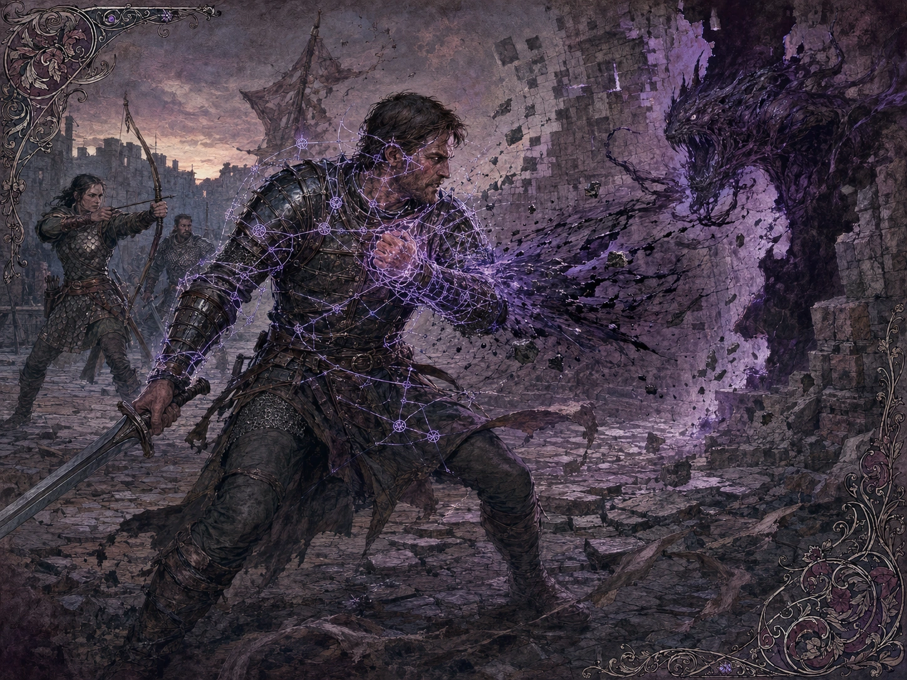
III · Ткач Потока: Ключ Цитадели
- Ключ Цитадели. Проведя 10 минут в непрерывной медитации на знаке и оставаясь неподвижным, вы можете войти в Цитадель из любой точки физического мира и провести одно согласное существо, которое остаётся в пределах 5 фт все 10 минут. Получение урона, добровольное перемещение, потеря сознания или дееспособности либо прекращение медитации прерывают процедуру без проверки Концентрации. Тело и снаряжение перемещаются полностью. Для выхода выберите один из пяти физических якорей и повторите ту же десятиминутную процедуру.
- Сдвиг Нити. Один раз за короткий отдых, когда вы получаете урон, используйте реакцию и уменьшите его на 2к6 + ваш ранг. Если источником был эффект аномалии или существо, пришедшее из неё, после уменьшения вы можете переместиться на 10 фт, не провоцируя атак.
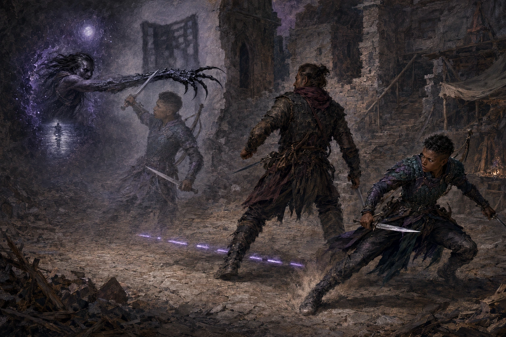
IV · Старший Ткач: Протокол Извлечения
- Страховка техники. Один раз за каждую операцию извлечения, когда вы совершаете финальный спасбросок ключевой характеристики, вы можете перебросить его. Вы обязаны использовать новый результат.
- Клин Узора. Один раз за короткий отдых бонусным действием на 1 минуту ваши атаки оружием и плетения наносят дополнительный урон. Каждая попавшая атака оружием получает +1к6; против существ из аномалии или Тел'аран'риода — +2к6 вместо +1к6. Для плетения дополнительные кубики применяются один раз за сотворение к одному броску основного урона; если один общий бросок применяется ко всем целям области, усиление действует на этот общий бросок. При нескольких отдельных атаках или повторяющемся уроне выберите один бросок. Тип дополнительного урона совпадает с типом основного урона; если исходный эффект не наносит урона, Клин его не создаёт.
- Самостабилизация. Пока действует Клин Узора и у вас есть хотя бы 1 хит, в начале каждого вашего хода вы восстанавливаете 3 хита. При 0 хитов восстановление не срабатывает.
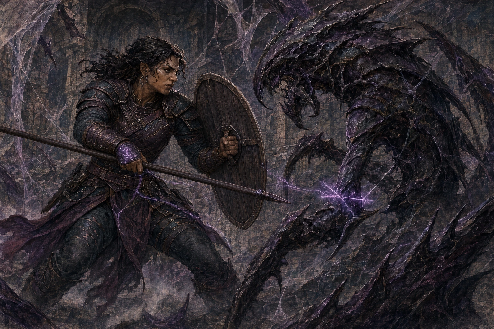
V · Чемпион Узора: Чемпионская Нить
- Полевая клятва. Вы можете провести Клятву Узла вне Цитадели, если располагаете исправным тер'ангриалом-активатором. Обряд занимает 1 час.
- Стойкость. Уменьшайте на 3 урон от любой немагической атаки. При получении V ранга выберите один вид урона; вы получаете сопротивление этому виду урона от немагических источников. Выбор закрепляется за рангом и не меняется после отдыха.
- Сверхскорость. Между началом вашего текущего хода и началом следующего вы можете совершить до двух реакций, но не более одной реакции на один и тот же триггер.
- Выдача из резерва. Один раз за долгий отдых бонусным действием выберите один режим на 10 минут: Бастион даёт +2 КД и преимущество на спасброски Телосложения; Напор даёт +2 к броскам атаки оружием и урону оружия; Ясность Узора даёт +2 к СЛ плетений и преимущество на проверки концентрации. Режим нельзя сменить до окончания эффекта.
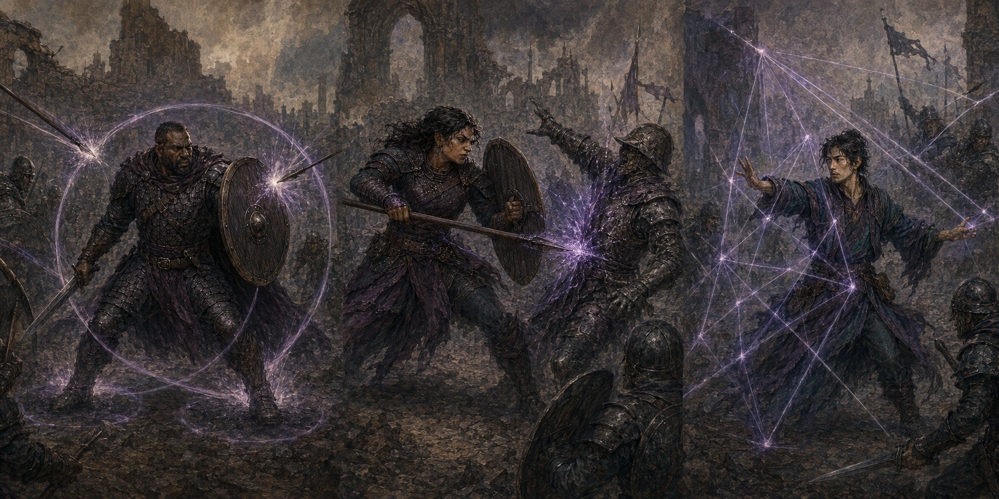
VI · Архистраж: Рука Резерва
- Допуски Сферы. Вы можете открывать, ограничивать и закрывать доступ членов Ордена к Цитадели и резерву. Временное ограничение блокирует доступ к Цитадели, Сфере, Пирамидке и новым выдачам Резерва, но само по себе не снимает ранг и не отменяет постоянные числовые бонусы или ранговые способности. Только Архистраж может инициировать ритуал окончательного снятия связи с Иерархией у Сферы Узора.
- Перенаправление Потока. Один раз за короткий отдых бонусным действием на 1 минуту получите сопротивление дробящему, колющему и рубящему урону от немагических источников. Пока у вас есть хотя бы 1 хит, в начале каждого хода вы восстанавливаете 5 хитов.
- Многорукий. Один раз в свой ход, совершая действие Атака, выполните одну дополнительную атаку оружием. Вместо этого, когда вы создаёте плетение, которое требует одного или нескольких бросков атаки, можете в рамках того же плетения совершить один дополнительный бросок атаки по допустимой цели. При попадании он наносит обычный прямой урон одной атаки этого плетения, но не повторяет дополнительные состояния, области, перемещения или иные вторичные эффекты. Способность не создаёт второе плетение, не расходует дополнительную ячейку и не увеличивает число плетений, которое вы можете создать за ход.
- Укрепление Нити. Только Архистраж может начать ритуал повышения ранга или окончательного снятия связи с Иерархией. Оба обряда проводятся у Сферы Узора.
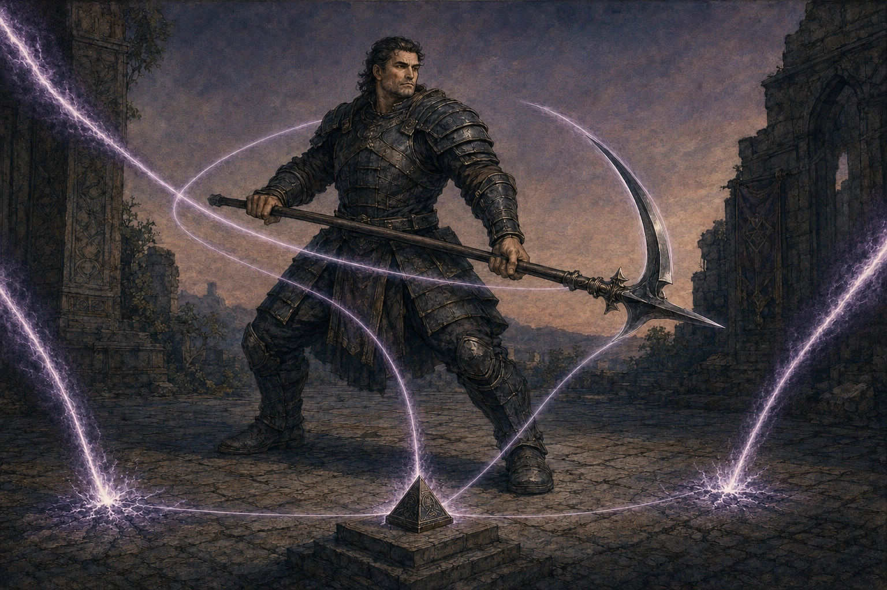
17. Испытания и повышение
| Новый ранг | Испытание | Что подтверждает |
|---|---|---|
| I | Принести Клятву Узла и выдержать первое установление связи. | Добровольность и совместимость со Сферой. |
| II | Самостоятельно призвать и активировать Пирамидку в учебном узле. | Базовый контроль тер'ангриала. |
| III | Участвовать в успешном схлопывании аномалии и провести заряд в Цитадель. | Устойчивость полевого канала. |
| IV | Завершить операцию извлечения в условиях сильного выброса или иного серьёзного осложнения аномалии. | Способность удержать протокол под давлением. |
| V | Возглавить эвакуацию и стабилизацию без потерь среди мирных жителей. | Ответственность Чемпиона, а не только личную силу. |
| VI | Скоординировать несколько узловых отрядов при крупной или постоянной угрозе. | Способность управлять доступом к общему резерву. |
Испытание создаёт право на повышение, но не заменяет ритуал. Архистражи могут отложить обряд, если кандидат нарушил протокол, не восстановился после воздействия аномалии или не понимает последствий нового допуска. Лишение ранга не используется как обычное дисциплинарное наказание: временное ограничение допуска блокирует доступ к Цитадели, Сфере, Пирамидке и новым выдачам Резерва, но не снимает сам ранг; окончательное снятие связи прекращает все ранговые преимущества и проводится отдельным ритуалом у Сферы.
18. Как выглядит работа Стражей
До прибытия отряда место уже перестаёт быть обычным. Капли дождя зависают над мостовой, отражение поворачивает голову позже человека, из закрытой комнаты доносится ветер. Стражи не начинают с оружия: отмечают границу мелом и металлическими штырями, повторяют показания свидетелей, оценивают ритм проявлений и только затем активируют Пирамидку.
Во время извлечения вокруг основания возникает узкий круг тишины. Пыль ложится ровнее, звук становится яснее, а печати проваливаются в глубину граней. Сама аномалия сопротивляется: меняет расстояния, выбрасывает существ и пытается заставить оператора покинуть точку. Поэтому сцена стабилизации — не неподвижный ритуал, а бой за несколько квадратных футов реальности.
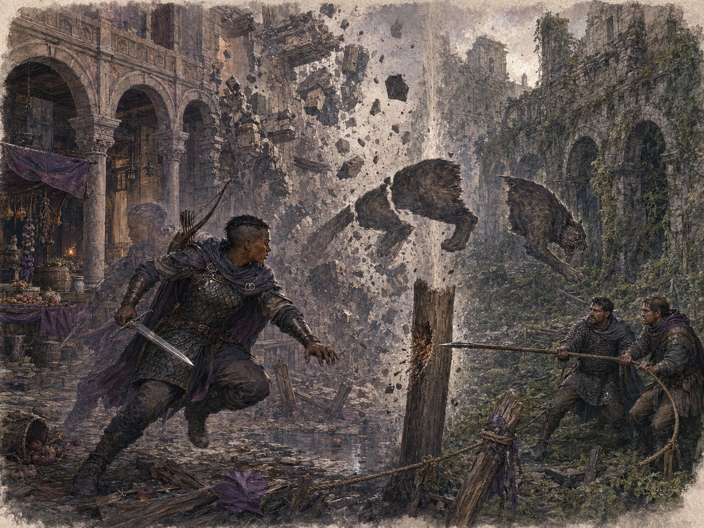
После успеха разрыв не взрывается и не исчезает мгновенной вспышкой. Его края становятся тоньше, чужие цвета вымываются, а последний звук обрывается так, словно закрылась тяжёлая дверь. Заполненная Пирамидка темнеет и давит на ладонь. До передачи Сфере её охраняют как опасный груз.
19. Отношения с внешним миром
| Сторона | Обычное отношение |
|---|---|
| Белая Башня | Сотрудничество в исследованиях и напряжённые споры о праве Ордена действовать без её надзора. |
| Чёрная Башня | Практичное полевое партнёрство; Аша'маны ценят протокол, но не любят закрытые допуски Сферы. |
| Порубежье | Сдержанное уважение: результат операции обычно важнее титула и происхождения Стража. |
| Шончанские земли | Орден считают неподконтрольной силой. Перемещения и тер'ангриалы Стражей вызывают особое подозрение. |
| Другие Иерархии | От нейтрального обмена сведениями до открытой вражды. Стражи выступают против принудительного донорства и вмешиваются, если оно повреждает Узор. |
| Обычные жители | Смесь надежды и страха. При непосредственной угрозе Стражи оказывают помощь независимо от предварительной оплаты, но редко объясняют устройство Цитадели и резерва. |
20. Слухи и что они означают
Следующие высказывания существуют в мире, но не являются подтверждёнными правилами или общедоступными фактами. Их истинность определяет Мастер.
| Слух | Что подтверждено |
|---|---|
| «Сфера гудит, и в тот же день далёкая аномалия гаснет сама». | Сфера иногда входит в резонанс с крупными разрывами. Дистанционно схлопывать аномалию по известному протоколу нельзя. |
| «Пустая Пирамидка возвращается, будто аномалия что-то забрала». | Срыв канала действительно уничтожает промежуточный заряд. Уничтоженная Пирамидка сама не возвращается: новый экземпляр получают только после возвращения в Цитадель и восстановления связи в Мастерских Пирамид. |
| «Архистраж может снять след любой Иерархии». | Архистражи умеют инициировать окончательное снятие связи со Стражами Узора. Возможность воздействовать на чужую Иерархию не подтверждена. |
| «Орден забирает выживших и стирает им память». | Стражи предлагают помощь людям, изменённым аномалией, и могут перевезти их в Цитадель только с согласия. Изменения памяти иногда вызывает сама аномалия. |
21. Памятка игроку
- При получении I ранга выберите Интеллект, Мудрость или Харизму как ключевую характеристику Иерархии.
- Для начала операции активируйте Пирамидку: она автоматически определяет подходящую узловую точку и фиксируется в ней.
- После активации Пирамидка неподвижна: её нельзя поднять, сдвинуть, оттолкнуть, перетащить или опрокинуть.
- Оставайтесь в сознании, на том же плане и в пределах 60 фт от активной Пирамидки; нарушение любого условия немедленно срывает канал.
- Длительность извлечения: 1к10 + R − ранг Иерарха, минимум 1 раунд.
- Финальный спасбросок: ключевая характеристика против СЛ 10 + R.
- До успешного финального спасброска Пирамидка не считается заполненной.
- Заполненную Пирамидку нельзя отозвать: физически доставьте её к Сфере Узора.
- Именные способности нижних рангов сохраняются; постоянные числовые параметры берутся из строки текущего ранга, а повышения характеристик накапливаются.
- Главный принцип. Стабилизация заканчивается не тогда, когда побеждено последнее существо, а когда завершено извлечение. Защитить оператора и активную Пирамидку важнее, чем преследовать врага за пределами зоны операции.